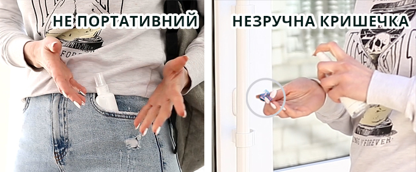
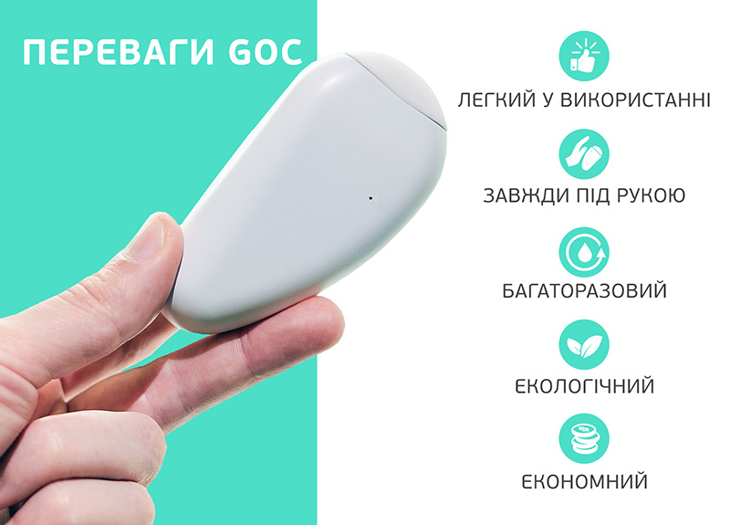
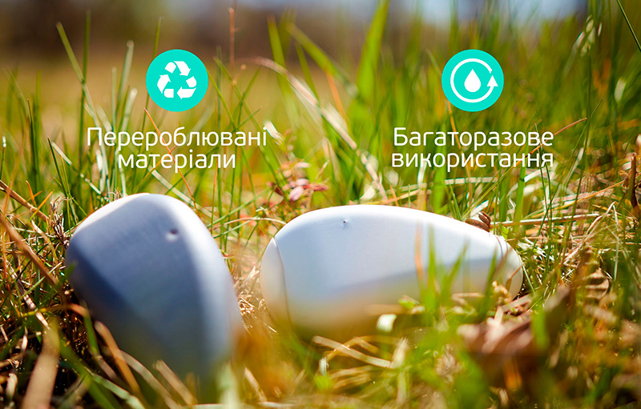
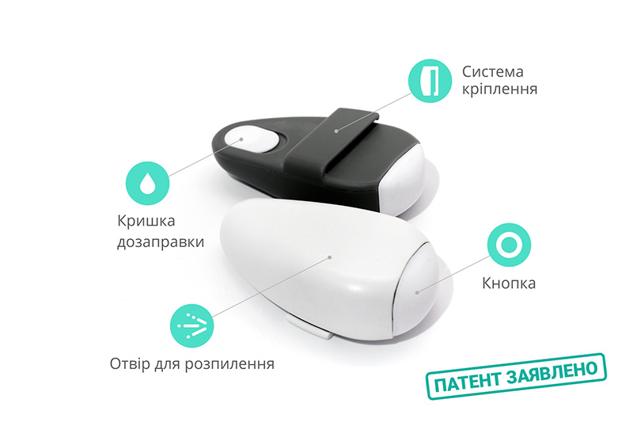

Про продукт
У 2020 році пандемія зробила персональні дезінфікуючі засоби для рук ще одним важливим аксесуаром для вашого здоров'я і безпеки. Усвідомлюючи нагальну потребу ефективної гігієни рук та беручи до уваги необхідність в зручності і компактності пристрою, ми розробили персональний диспенсер Go.C, щоб піклуватися про ваше здоров'я. Go.C - зручне, практичне, сучасне і ефективне рішення.
Комплект Go.C включає: персональний диспенсер Go.C та антисептик Go.C 100мл.

Як він працює
Диспенсер Go.C - це новий пристрій, який дозволяє носити дезінфікуючий засіб для рук прямо на поясі, кишені, сумці або ремені. Усередині диспенсера Go.C знаходиться багаторазовий резервуар для дезінфікуючого засобу, який підключається до розпилювального пристрою.
Тримайте Go.C під рукою - прикріпіть його до ременя, кишені або сумки для швидкої та ефективної гігієни рук та захисту від вірусів і бактерій.
При натисканні на силіконову кнопку великим пальцем, диспенсер Go.C розпилює оптимальну кількість дезінфікуючого засобу прямо на вашу долоню, тим самим дозволяючи вам розподіляти дезінфікуючий засіб простим і ефективним способом, виключаючи при цьому будь-яку можливість забруднення.
Переваги
ДИСПЕНСЕР ДЛЯ ПРОФЕСІЙНОГО ВИКОРИСТАННЯ
Свідоме використання переробленого пластику сприяє скороченню відходів на нашій дорогоцінній планеті.
Дизайн
- Розміри
- 95x50x30 мм (3.74"x1.97"x1.18")
- Об’єм
- 33 мл. (1.12 oz)
- Матеріал корпусу
- Пластик, стійкий до спиртовмісних речовин, без нанесення фарби
- Матеріал кнопки і кришки
- гіпоалергенний силікон
Доступний в трьох кольорах.
Go.C приділяє особливу увагу дизайну, щоб забезпечити максимальну зручність і простоту використання.
Диспенсер Go.C має багаторазовий, перезаправний контейнер для антисептика. Коли дезінфікуючий засіб закінчується, просто залийте в диспенсер нову кількість дезінфікуючого засобу, і продовжуйте використовувати Go.C.